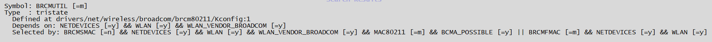

4.3.20. Wi-Fi 驱动调试指南
旭日X3M开发板上的Wi-Fi模块型号为 AP6212 模组，支持2.4G频段。
4.3.20.1. 驱动配置
CONFIG_BRCMFMAC
CONFIG_BRCMUTIL （选中CONFIG_BRCMFMAC时本项会自动选择）

CONFIG_CFG80211
CONFIG_RFKILL
4.3.20.2. Wi-Fi使用
状态确认
开发板上电默认工作在STATION模式下，可以通过 ifconfig -a 命令查看到 wlan0 的网络节点：
root@x3sdbx3-samsung2G-3200:~# ifconfig -a
wlan0 Link encap:Ethernet HWaddr 70:4a:0e:13:69:aa
BROADCAST MULTICAST MTU:1500 Metric:1
RX packets:0 errors:0 dropped:0 overruns:0 frame:0
TX packets:0 errors:0 dropped:0 overruns:0 carrier:0
collisions:0 txqueuelen:1000
RX bytes:0 (0.0 B) TX bytes:0 (0.0 B)
联网使用
运行 wifi_connect [ssid] [password] 连接热点联网。运行结果如下所示。
root@x3sdbx3-samsung2G-3200:~# wifi_connect "WiFi-Test" "12345678"
udhcpc: started, v1.31.0
udhcpc: sending discover
udhcpc: sending select for 192.168.137.26
udhcpc: lease of 192.168.137.26 obtained, lease time 604800
/userdata/udhcpc.d/50default: Adding DNS 192.168.137.1
root@x3sdbx3-samsung2G-3200:~# ping www.horizon.ai
PING www.horizon.ai (47.92.42.221): 56 data bytes
64 bytes from 47.92.42.221: seq=0 ttl=88 time=204.797 ms
64 bytes from 47.92.42.221: seq=1 ttl=88 time=126.666 ms
64 bytes from 47.92.42.221: seq=4 ttl=88 time=197.004 ms
64 bytes from 47.92.42.221: seq=5 ttl=88 time=118.345 ms
^C
--- www.horizon.ai ping statistics ---
6 packets transmitted, 4 packets received, 33% packet loss
round-trip min/avg/max = 118.345/161.703/204.797 ms
切换Wi-Fi的工作模式
AP6212支持AP和STATION两种模式，开发板上电默认工作在STATION模式下。在sdk中提供wifi_init程序来对wifi的工作模式进行切换。
设置
AP6212工作在AP模式，请执行wifi_init ap命令设置模式，运行过程如下所示，在结束时出现wlan0: AP-ENABLED说明设置成功，生成的热点名为sunrise，没有设置密码：
root@x3sdbx3-samsung2G-3200:~# wifi_init ap
Initialize wlan0 to ap mode
[ 81.631181] x3sdbx3-samsung2G-3200:unkown: Untracked pid 1949 killed by signal 9
[ 81.672070] x3sdbx3-samsung2G-3200:unkown: Untracked pid 1913 killed by signal 9
[ 83.672208] IPv6: ADDRCONF(NETDEV_UP): wlan0: link is not ready
Configuration file: /etc/hostapd.conf
Failed to create interface mon.wlan0: -95 (Operation not supported)
wlan0: Could not connect to kernel driver
Using interface wlan0 with hwaddr 08:e9:f6:af:18:26 and ssid "sunrise"
[ 83.800766] IPv6: ADDRCONF(NETDEV_CHANGE): wlan0: link becomes ready
wlan0: interface state UNINITIALIZED->ENABLED
wlan0: AP-ENABLED
Finish initialize wlan0 to ap mode
设置
AP6212工作在STATION模式，请执行wifi_init sta命令设置模式，运行过程如下所示，可以通过ps命令查看wpa_supplicant和udhcpc是否在运行来确定切换是否成功，并进行联网测试。
root@x3sdbx3-samsung2G-3200:~# wifi_init sta
Initialize wlan0 to station mode
[ 115.605035] x3sdbx3-samsung2G-3200:unkown: Untracked pid 1972 killed by signal 9
[ 115.652050] x3sdbx3-samsung2G-3200:unkown: Untracked pid 1974 killed by signal 9
[ 118.104320] IPv6: ADDRCONF(NETDEV_UP): wlan0: link is not ready
Finish initialize wlan0 to station mode
root@x3sdbx3-samsung2G-3200:~# ps
... ...
2150 root 20 0 10248 S wpa_supplicant -D nl80211 -i wlan0 -c /tmp/wpa_supplicant.conf -B
2179 root 20 0 3252 S udhcpc -i wlan0 -s /usr/share/udhcpc/default.script
... ...
当前配置的热点是没有设置密码的，如果需要添加密码，请修改 /etc/hostapd.conf 为如下内容后，重新执行 wifi_init ap。
interface=wlan0
driver=nl80211
ctrl_interface=/var/run/hostapd
ssid=Sunrise
channel=6
ieee80211n=1
hw_mode=g
ignore_broadcast_ssid=0
wpa=2
wpa_key_mgmt=WPA-PSK
rsn_pairwise=CCMP
wpa_passphrase=12345678
4.3.20.3. 其他方式使用wifi
针对地平线发布的V0508 和V0807等版本的SDK，使Wi-Fi的方式有一点区别，请按照以下方式操作。
驱动下载
备注：仅V0508和V0807版本SDK需要额外下载驱动
从 X3M附加工具包 的 AP6212 目录下，下载Wi-Fi的驱动（wifi_drivers）和AP6212固件文件（brcm.zip）
安装固件：
mount -o rw,remount /
tar -xvf brcm.tar.gz
cp brcm /lib/firmware/ -rf
加载Wi-Fi驱动（注意版本对应）：
cd wifi_drivers/V0508
insmod rfkill.ko
insmod cfg80211.ko
insmod brcmutil.ko
insmod brcmfmac.ko
查看wlan0：
ifconfig -a
wlan0 Link encap:Ethernet HWaddr b0:02:47:a6:02:ff
BROADCAST MULTICAST MTU:1500 Metric:1
RX packets:0 errors:0 dropped:0 overruns:0 frame:0
TX packets:0 errors:0 dropped:0 overruns:0 carrier:0
collisions:0 txqueuelen:1000
RX bytes:0 (0.0 B) TX bytes:0 (0.0 B)
Wi-Fi使用
根据自己所处环境修改以下脚本中的Wi-Fi热点名 WIFI_AP_NAME 和 wifi密码 WIFI_AP_PASSWD。
#!/bin/sh
# remount the file system readable and writable
mount -o rw,remount /
WIFI_AP_NAME="WIFI_HOTSPOT"
WIFI_AP_PASSWD="PASSWORD"
rm -rf /etc/wpa_supplicant.conf
wpa_passphrase ${WIFI_AP_NAME} ${WIFI_AP_PASSWD} >> /etc/wpa_supplicant.conf
# add dns config
echo "nameserver 114.114.114.114" >> /etc/resolv.conf
echo "nameserver 8.8.8.8" >> /etc/resolv.conf
sleep 3
wpa_supplicant -D nl80211 -i wlan0 -c /etc/wpa_supplicant.conf -B
sleep 1
chmod +x /usr/share/udhcpc/default.script
udhcpc -i wlan0 -s /usr/share/udhcpc/default.script
# wifi wlan0的路由优先级是600，非常低，所以要保证通过连接外网正常，可以删掉 eth0 的路由，让系统默认使用wlan0
ip route show table all
ip route del default via 192.168.1.1 dev eth0 onlink
# 当以太网和Wi-Fi同时使用时，需要避免以太网和Wi-Fi处于同一网段，否则会可能出现AP侧显示物理连接成功，但是设备间无法ping通的问题
# testing
ping cn.horizon.ai
PING cn.horizon.ai (47.92.42.221): 56 data bytes
64 bytes from 47.92.42.221: seq=0 ttl=88 time=204.219 ms
备注：
udhcpc 连接Wi-Fi时，如果设备没有天线，信号强度不好的情况下，需要花费比较长时间scan Wi-Fi热点和连接Wi-Fi。